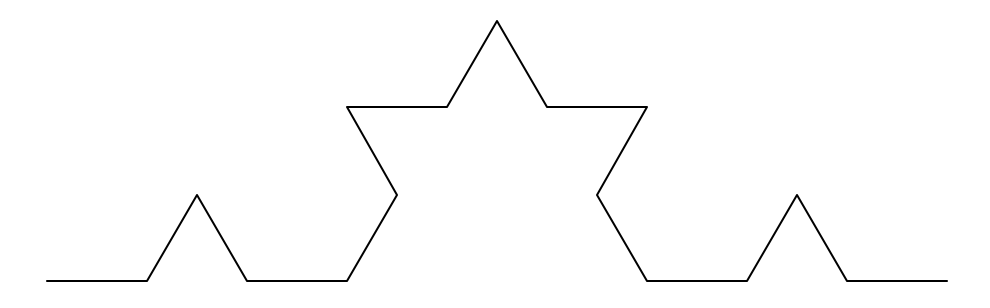

Koch Curve
Here is a basic Koch curve. koch_curve(t, 3, 50)

Here is a modified Koch curve where the length, color, and width of each stroke is random. koch_modified(t, 3, 50)
def koch_modified(t, depth, size):
if (depth == 1):
t.width(random.randrange(1, 5))
t.color( (random.randrange(0, 255)), (random.randrange(0, 255)), (random.randrange(0, 255)) )
t.fd(size + (random.randrange(-10, 10)))
else:
koch_modified(t, depth-1, size)
t.lt(60)
koch_modified(t, depth-1, size)
t.rt(120)
koch_modified(t, depth-1, size)
t.lt(60)
koch_modified(t, depth-1, size)
Sierpinski Triangle
Here is a basic Sierpinski triangle. sierpinski(t, 4, 200)
Here are 4 modified Sierpinski triangle where the base triangle is a right isosceles triangle. sierp_modified0(t, 4, 100)
Here is a single modified Sierpinski triangle. sierp_m(t, 4, 100)
def rt_triangle(t, size):
t.lt(90)
t.fd(size)
t.rt(135)
t.fd(size * (2 ** (1 / 2)))
t.rt(135)
t.fd(size)
t.rt(180)
def sierp_m(t, depth, size):
if depth == 1:
rt_triangle(t, size)
else:
sierp_m(t, depth-1, size/2)
t.fd(size/2)
sierp_m(t, depth-1, size/2)
t.bk(size/2)
t.lt(90)
t.fd(size/2)
t.rt(90)
sierp_m(t, depth-1, size/2)
t.lt(90)
t.bk(size/2)
t.rt(90)
def sierp_modified0(t, depth, size):
sierp_m(t, depth, size)
t.rt(90)
sierp_m(t, depth, size)
t.rt(90)
sierp_m(t, depth, size)
t.rt(90)
sierp_m(t, depth, size)
Tree
Here is a basic tree. tree(t, 5, 30, 45)
Here is a modified tree where the "leaves" are random colors and longer than the branches, and the tree has roots. There is also some variation in the length of the "leaves".
tree_modified0(t, 5, 50, 30, 8)

def tree_m(t, depth, length, angle, width):
t.width(width)
if depth == 0:
t.color( (random.randrange(0, 255)), (random.randrange(0, 255)), (random.randrange(0, 255)) )
angle += random.randrange(-5, 5)
length += random.randrange(20, 50)
t.fd(length)
t.bk(length)
t.color("brown")
else:
t.color( "brown" )
t.fd(length)
t.rt(angle / 2)
tree_m(t, depth - 1, length, angle, width - 1)
t.lt(angle / 2)
tree_m(t, depth - 1, length, angle, width - 1)
t.lt(angle / 2)
tree_m(t, depth - 1, length, angle, width - 1)
t.rt(angle / 2)
t.bk(length)
def tree_modified0(t, depth, length, angle, width):
tree_m(t, depth - 1, length, angle, width)
t.rt(180)
tree(t, depth - 1, length * 0.5, angle * 2)